Linear motion is insufficient in describing the dynamics of motion that involves rotations in addition to translations.
(PICTURE)
EXAMPLE: A system of two masses connected by a rigid link rotating about the center of the link, zero linear momentum yet motion prevails.
We remind that the equation of motion for a mass (or a system of masses) \[ \sum_i \boldsymbol{F}_i = \dot{\boldsymbol{G}} \]
runs short of describing angular effects. For that purpose we introduce a point \(O\) about which rotational effect is observed. By taking the cross product of the equation of motion with the position vector \(\boldsymbol{r}\) from \(O\) we get \[ \boldsymbol{r} \times \sum_i \boldsymbol{F}_i = \boldsymbol{r} \times \dot{\boldsymbol{G}} \]
We can define two new quantities that appear on both sides of the equal sign.
On the left of the angular equation of motion, the cross product of the position vector from \(O\) with the resultant forces appeared. This is called as \(\boldsymbol{M}^O\) as \[ \sum_i \boldsymbol{M}_i^O = \boldsymbol{r} \times \sum_i \boldsymbol{F}_i \]
On the right side of the angular equation of motion is another story (following the next slide)
The mathematics of the cross-product operation involves cyclic permutations of the argument vector components.
On the right of the angular equation of motion we introduce another type of momentum with a new vector type.
(PICTURE)
This will be called as the angular momentum of mass \(m\) about point \(O\), \(\boldsymbol{H}^O\), and expressed as \[ \boldsymbol{H}^O = \boldsymbol{r} \times \boldsymbol{G} \]
Note that the rotational vectors resulting from the cross product (e.g. rotation, moment, angular velocity, angular moment, etc.) have a different nature compared with ordinary (e.g. force) vectors. Their designation includes a double-arrow.
Upon taking the rate of change of angular momentum we get \[ \dot{\boldsymbol{H}^O} = \dot{\boldsymbol{r}} \times \boldsymbol{G} + \boldsymbol{r} \times \dot{\boldsymbol{G}} \]
But as \(\dot{\boldsymbol{r}}=\boldsymbol{v}\) is parallel to \(\boldsymbol{G}\), the first term vanishes.
Now the angular equation of motion can be restated in terms of the newly defined notions as \[ \sum_i \boldsymbol{M}_i^O = \dot{\boldsymbol{H}^O} \]
which reads
The moment about an observer \(O\) of all forces acting on mass \(m\) (or a system of masses) equals the time rate of change of angular momentum of \(m\) (or a system of masses) about \(O\).
The vector equation can be decomposed into it’s scalar components.
The above expression can be integrated in time to obtain the angular impulse-momentum relation which will be practical to solve simple problems in dynamics.
Before integration we need to express the balance of angular moment principle in its differential form as \[ \sum_i \boldsymbol{M}_i^O dt = d \boldsymbol{H}^O \]
form one
Integrating the equations of motion from time \(t_1\) to time \(t_2\), we have
\[ \int_{t_1}^{t_2} \sum_i \boldsymbol{M}_i^O dt = (\boldsymbol{H}^O)_2 - (\boldsymbol{H}^O)_1 \]
form two
Form One can also be rewritten as
\[ (\boldsymbol{H}^O)_1 + \int_{t_1}^{t_2} \sum_i \boldsymbol{M}_i^O dt = (\boldsymbol{H}^O)_2 \]
which reads
Total angular impulse on \(m\) about point \(O\) equals the corresponding change in angular momentum of \(m\) about \(O\).
A reduction from 3-D model space becomes possible when the motion of the mechanical system is constrained to a plane.
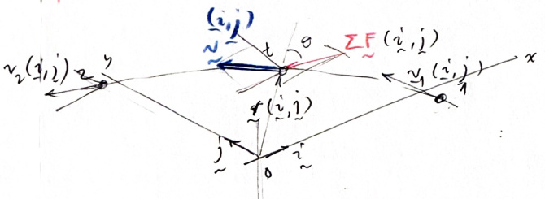
In this case, the 6 degrees-of-freedoms (dofs) are reduced to 3.
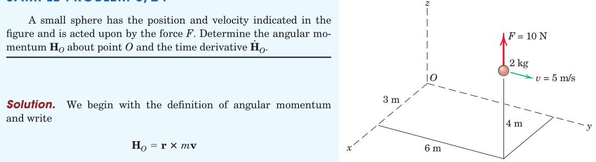
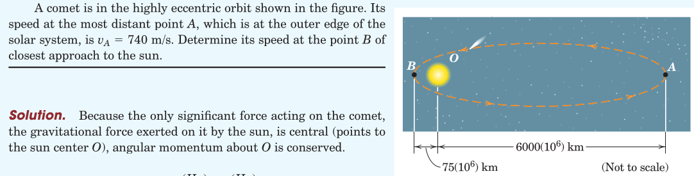
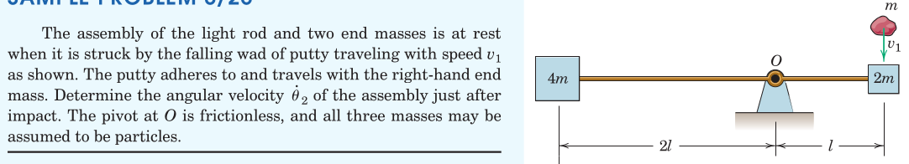
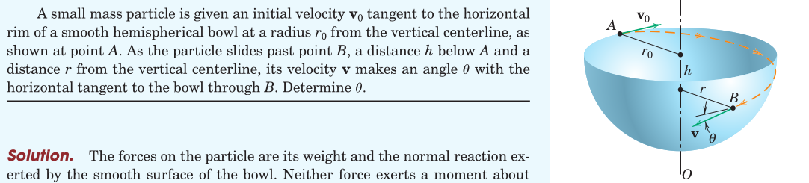
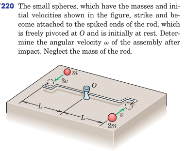
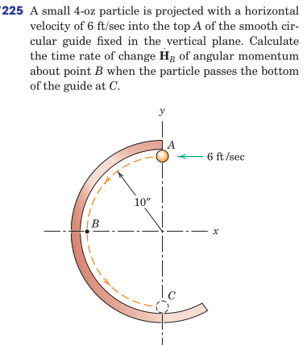
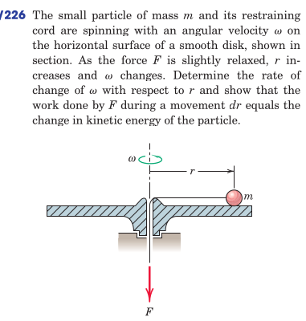
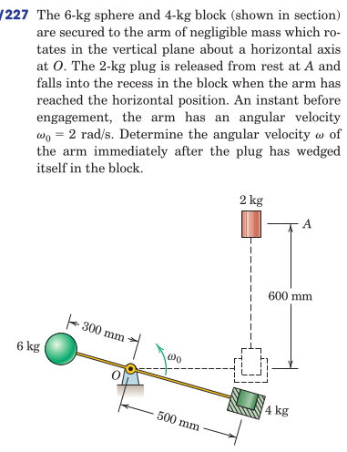
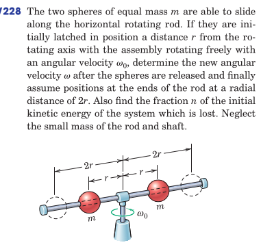
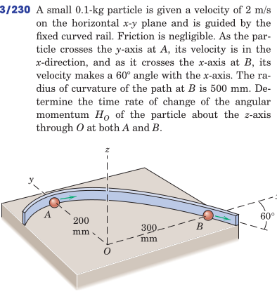
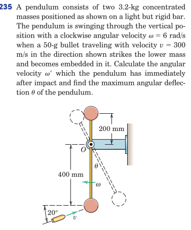
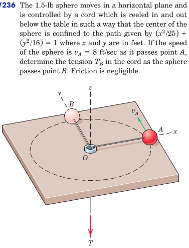
From Hibbeler, Engineering Mechanics: Dynamics: Chapter 15: 49, 62, 66, 69, 71, 72, 73, 76, 78, 81, 85, 90